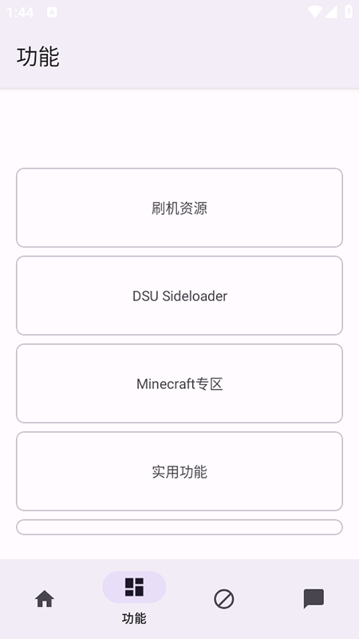
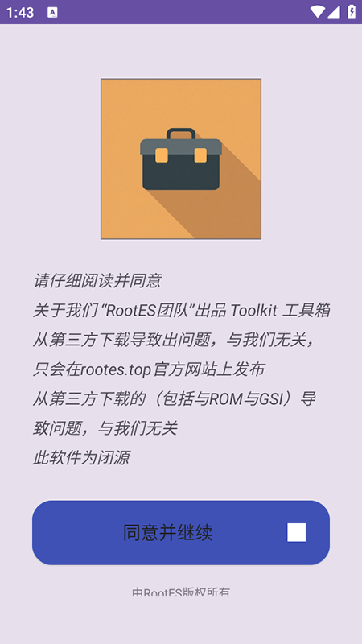
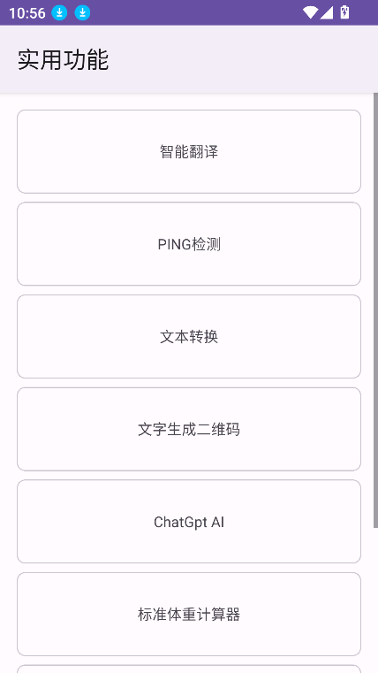

Toolkit 藏了四个冷门入口：没 root 也能刷 GSI、协议页还能辨真假
大多数人以为 Toolkit 是刷机党专属的资源下载器，其实 DSU Sideloader 能免 root 刷 GSI，协议页和支持页里藏着辨别第三方包的信任信息，四大板块的分层设计对新手极其友好。
你在toolkit官网上看到的 Toolkit 工具箱，就是个刷机资源下载器？打开看一眼四大板块就直接把它归到「root 玩家专属」那类了——我一开始也是这么想的。直到某天花了一晚上翻遍每个角落，才发现它藏着好几个让非 root 用户也能玩出花的门路，还有一些连官方都不怎么宣传的设计细节。
藏在角落里的 DSU Sideloader：免 root 也能刷 GSI
这是我挖到的第一个惊喜。Toolkit 的四个板块里，DSU Sideloader 被放在和刷机资源并列的位置，但多数人扫一眼主界面就直接点刷机资源进去了，完全没注意到这个独立板块的存在。
DSU 全称是 Dynamic System Updates，是 Android 10 引入的动态分区特性——简单说就是系统分区可以动态调整大小，不需要像以前那样把分区锁死。Toolkit 把这个能力做成了 Sideloader，意味着你不需要 root，只要解锁 Bootloader 且设备支持动态分区，就能刷进 GSI（Generic System Image，通用系统镜像）。
这个入口藏得真深。后来去toolkit文档翻了一下才弄明白，关于 DSU 能做什么、什么设备支持，相关说明分散在好几页里没有放在一处。我的经验是：先去关于页确认设备是否在支持列表里（Android 版本 ≥ 10 是硬门槛），然后在 DSU 板块选好 GSI 镜像，按引导走就行。整个过程和传统刷机完全不同，不需要 recovey、不需要 Magisk，刷完之后重启直接进新系统体验，不想用了重启又回原系统。

什么人用得上？想玩原生 Android 但又不想刷坏日常主力机的用户，或者想体验其他厂商系统但又不想解锁 root 的折腾党。什么人可以无视？已经 root 且有完整刷机经验的玩家，他们有自己的 Magisk + recovery 组合拳，DSU 对他们来说效率反而不高。
协议页不是走过场：闭源声明帮你辨第三方包
每次冷启动都会先停在协议页，大多数人直接点「同意并继续」就进去了，连眼尾角都没扫一下。但你知道吗，Toolkit 的协议页其实把几个关键信息写在了那里——出品方是 RootES 团队、发布渠道只有 rootes.top、此软件为闭源。
这三条信息藏得巧妙，因为它们不是用户协议那种长篇大论，而是用一种类似产品声明的方式放在了最显眼的位置。我后来才明白，对于闭源且不上架应用商店的应用来说，协议页就是开发者在帮你建立信任的第一道关卡。
具体怎么用这个信息？当你在某个第三方下载站看到 Toolkit 的安装包时，先核对两个点：一是页面上有没有标注来源是 rootes.top，二是版本号和你之前从官方渠道拿到的是否一致。协议页里明确说了「第三方下载导致问题与团队无关」，但这不是免责甩锅——它是在告诉你：只有官方渠道的包才有保障。闭源软件没法让你自己验证代码，那渠道的唯一性就是最核心的信任锚点。

四大板块的分层权限设计：没 root 也能把它用透
Toolkit 的 root 要求是分层的，但这个设计在主界面上完全看不出来——它没有给每个板块标「需 root」的标签，而是用一种更微妙的方式让你自己探索。
我整理了一下实际的权限门槛：实用功能板块的所有工具（翻译、Ping、二维码）零门槛，下载刷机资源不需要 root（只有真正执行刷入操作才需要对应的环境），DSU Sideloader 不强制 root 但多数 GSI 要求解锁 Bootloader。只有那些涉及 Magisk 模块管理、系统级修改的高级功能才真正需要 root。
这个分层设计藏在日常使用的默认路径里，没有文档特意强调，我也是试了好几个板块才摸清楚。好处是：你不需要一上来就决定「要不要 root」，完全可以先从实用功能开始，翻译、Ping 网络测试这些随手就能用的小工具，安装包从官方下载拿一份装上就能直接上手，零学习成本。

Minecraft 专区：刷机工具里藏着的 MC 入口
四大板块里还有一个 Minecraft 专区，这个在同类工具里非常少见——一个主打刷机和系统工具的应用，为什么要专门辟一个板块给 MC？
我翻遍了主页的公告栏和支持页才稍微理解了这个定位：RootES 团队的核心受众本来就是安卓折腾党，而折腾党群体里 MC 玩家占比不低。与其让这些用户在工具箱和 MC 启动器之间来回跳，不如直接把常用资源整合进来。
这个专区不算什么功能上的隐藏，但它在产品定位里的角色被多数人忽略了——很多人把 Toolkit 当成纯粹的刷机工具，其实它的野心远不止于此，它想做的是面向特定用户群的一站式工具箱。
一个坑别踩：DSU 不是所有设备都能玩
最后说一个容易踩的坑。DSU Sideloader 看起来门槛很低，但它有个隐藏前提：设备必须支持动态分区。很多老机型即使系统版本升到了 Android 10，底层硬件还是传统分区，DSU 跑不起来。
还有一个细节：部分 GSI 镜像本身有额外要求（比如某些需要特定 vendor 版本），即使设备满足了 Toolkit 侧的条件也可能刷不成功。我的做法是先在关于页查清楚支持机型列表，再挑经过社区验证过稳定的 GSI 版本，不要拿自己的主力机做第一只小白鼠。
收尾
Toolkit 给我的最大惊喜不是哪个单独的功能，而是它那种「用户自己挖」的产品态度——协议页不强迫你读完但把信任锚点给你放那儿，DSU 不放在首页 banner 但悄悄给非 root 用户留了一条路，实用功能不打「零门槛」标签但你装完就能直接用。把它用透，真的能发现比你想象中多得多的玩法。顺带一提，APK 仓库的 Toolkit 资料我同步维护在GitHub、Gitee和GitCode三处，国内访问 Gitee 最顺手。